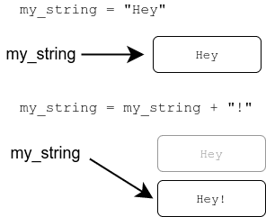

Més cadenes i llistes
Objectius d'aprenentatge
- Estar familiaritzat amb més mètodes per retallar cadenes de text i llistes
- Entendre què significa la immutabilitat de les cadenes de text
- Ser capaç d'utilitzar els mètodes
count()ireplace()
Retallar llistes
Ja esteu familiaritzat amb la sintaxi [] per accedir a una part d'una cadena de text:
cadena_exemple = "exemplar"
print(cadena_exemple[3:7])mpla
La mateixa sintaxi funciona amb llistes. Les llistes es poden retallar igual que les cadenes de text:
llista_nombres = [3,4,2,4,6,1,2,4,2]
print(llista_nombres[3:7])[4, 6, 1, 2]
Més retalls
De fet, la sintaxi [] funciona de manera molt similar a la funció range(), cosa que significa que també podem especificar un tercer paràmetre per a donar-li un pas:
cadena_exemple = "exemplar"
print(cadena_exemple[0:7:2])
llista_nombres = [1,2,3,4,5,6,7,8]
print(llista_nombres[6:2:-1])eepa [7, 6, 5, 4]
Si ometem qualsevol dels índexs, l'operador per defecte inclou tot. Entre altres coses, això ens permet escriure un programa molt curt per invertir una cadena de text:
cadena_exemple = input("Si us plau, escriviu una cadena de text: ")
print(cadena_exemple[::-1])Si us plau, escriviu una cadena de text: exemplar ralpmexe
Advertència: utilitzar variables globals dins de funcions
Sabem que és possible assignar noves variables dins de definicions de funcions, però la funció també pot veure variables assignades fora d'ella, a la funció principal. Aquestes variables s'anomenen variables globals.
Utilitzar variables globals des de dins de funcions sol ser una mala idea. Entre altres problemes, pot causar errors difícils de rastrejar.
A continuació es mostra un exemple d'una funció que utilitza una variable global "per error":
def imprimir_invertit(noms: list):
# utilitzant la variable global en lloc del paràmetre per accident
i = len(llista_noms) - 1
while i >= 0:
print(llista_noms[i])
i -= 1
# aquí s'assigna la variable global
llista_noms = ["Steve", "Jean", "Katherine", "Paul"]
imprimir_invertit(llista_noms)
print()
imprimir_invertit(["Huey", "Dewey", "Louie"])Paul Katherine Jean Steve Paul Katherine Jean Steve
Exercici 1: Tot invertit
Escriviu una funció anomenada tot_invertit(), que rep una llista de cadenes de text com a argument. La funció retorna una nova llista amb tots els elements de la llista original invertits. A més, l'ordre dels elements també ha d'estar invertit a la nova llista.
Exemple de com ha de funcionar la funció:
llista_paraules = ["Hola", "allà", "exemple", "un més"]
nova_llista = tot_invertit(llista_paraules)
print(nova_llista)['sém nu', 'elpmexe', 'allà', 'aloH']
Les cadenes de text són immutables
Les cadenes de text i les llistes tenen molt en comú, especialment en la manera com es comporten amb diferents operadors. La principal diferència és que les cadenes de text són immutables. Això vol dir que no es poden canviar.
cadena_exemple = "exemplar"
cadena_exemple[0] = "a"Les cadenes de text no es poden canviar, de manera que l'execució d'aquest programa causa un error:
TypeError: 'str' object does not support item assignment
Un error similar es produeix si intenteu ordenar una cadena de text amb el mètode sort().
Les cadenes són immutables, però les variables que les contenen no ho són. Una cadena pot ser substituida per una altra cadena.
Els dos exemples següents són fonamentalment diferents:
llista_exemple = [1,2,3]
llista_exemple[0] = 10
cadena_exemple = "Hola"
cadena_exemple = cadena_exemple + "!"
El primer exemple canvia els continguts de la llista referenciada. El segon exemple substitueix la referència a la cadena original amb una referència a una altra cadena. La cadena original encara es troba en algun lloc de la memòria de l'ordinador, però no hi ha cap referència a ella, i ja no es pot utilitzar en el programa.
Tornarem a veure aquest tema a la propera part, on s'exploren les referències a llistes amb més detall.
Més mètodes per a llistes i cadenes de text
El mètode count() compta el nombre de vegades que l'element o subcadena especificat es produeix a l'objectiu. El mètode funciona de manera similar tant amb cadenes de text com amb llistes:
cadena_text = "How much wood would a woodchuck chuck if a woodchuck could chuck wood"
print(cadena_text.count("ch"))
llista_nombres = [1,2,3,1,4,5,1,6]
print(llista_nombres.count(1))5 3
El mètode no comptarà les ocurrències superposades. Per exemple, a la cadena "aaaa" el mètode compta només dues ocurrències de la subcadena "aa", tot i que en realitat n'hi hauria tres si es permetessin ocurrències superposades.
El mètode replace() crea una nova cadena de text, on una subcadena especificada es substitueix amb una altra cadena de text:
cadena_salutacio = "Hola, bones"
nova_cadena = cadena_salutacio.replace("Hola", "Ei")
print(nova_cadena)Ei, bones
El mètode substituirà totes les ocurrències de la subcadena:
frase = "sheila sells seashells on the seashore"
print(frase.replace("she", "SHE"))SHEila sells seaSHElls on the seashore
Quan s'utilitza el mètode replace(), un error típic és oblidar que les cadenes de text són immutables:
cadena_exemple = "Python és divertit"
# substitueix la subcadena però no emmagatzema el resultat...
cadena_exemple.replace("Python", "Java")
print(cadena_exemple)Python és divertit
Si la cadena antiga ja no es necessita, la nova cadena es pot assignar a la mateixa variable:
cadena_exemple = "Python és divertit"
# substitueix la subcadena i emmagatzema el resultat a la mateixa variable
cadena_exemple = cadena_exemple.replace("Python", "Java")
print(cadena_exemple)Java és divertit
Exercici 2: Caràcter més comú
Escriviu una funció anomenada caracter_mes_comu(), que rep una cadena de text com a argument. La funció retorna el caràcter que té més ocurrències dins de la cadena de text. Si hi ha molts caràcters amb igual nombre d'ocurrències, s'ha de retornar el que aparegui primer a la cadena de text.
primera_cadena = "abcdbde"
print(caracter_mes_comu(primera_cadena))
segona_cadena = "exemplaryelementary"
print(caracter_mes_comu(segona_cadena))b e
Exercici 3: No es permeten vocals
Escriviu una funció anomenada sense_vocals(), que rep una cadena de text com a argument. La funció retorna una nova cadena de text, que ha de ser la mateixa que l'original però amb totes les vocals eliminades.
Podeu assumir que la cadena de text només contindrà caràcters de l'alfabet anglès en minúscules a...z.
cadena_exemple = "aixo es un exemple"
print(sense_vocals(cadena_exemple))x s n xmpl
Exercici 4: No es permet cridar
El mètode de cadena de text Python isupper() retorna True si una cadena de text consisteix només en caràcters en majúscules.
Alguns exemples:
print("XYZ".isupper())
es_majuscula = "Abc".isupper()
print(es_majuscula)True False
Utilitzeu el mètode isupper() per escriure una funció anomenada no_cridar(), que rep una llista de cadenes de text com a argument. La funció retorna una nova llista, que conté només aquells elements de l'original que no consisteixen únicament en caràcters en majúscules.
llista_textos = ["ABC", "def", "MAJUSCULA", "ALTRA MAJUSCULA", "minúscula", "una altra minúscula", "Majuscula"]
llista_podada = no_cridar(llista_textos)
print(llista_podada)['def', 'minúscula', 'una altra minúscula', 'Majuscula']
Exercici 5: Veïns en una llista
Donada una llista de nombres enters, decidim que dos elements consecutius a la llista són veïns si la seva diferència és 1. Així, els elements 1 i 2 serien veïns, i també ho serien els elements 56 i 55.
Escriviu una funció anomenada serie_mes_llarga_veins(), que busca la sèrie més llarga de veïns dins de la llista i retorna la seva longitud.
Per exemple, a la llista [1, 2, 5, 4, 3, 4] la llista més llarga de veïns seria [5, 4, 3, 4], amb una longitud de 4.
Exemple de crida a la funció:
llista_nombres = [1, 2, 5, 7, 6, 5, 6, 3, 4, 1, 0]
print(serie_mes_llarga_veins(llista_nombres))4
Desenvolupar un projecte de programació més gran
Aquesta quarta part culmina amb un projecte de programació una mica més gran, on podeu aplicar moltes de les tècniques apreses fins ara.
La regla núm. 1 per abordar qualsevol projecte de programació és no intentar resoldre tot alhora. El programa s'ha de construir a partir de seccions més petites, com ara funcions auxiliars. Heu de verificar el funcionament de cada part abans de passar a la següent. Si intenteu manejar massa coses alhora, probablement només resulti el caos.
Per fer això necessitareu una manera de provar les vostres funcions fora de la funció principal. Podeu aconseguir-ho definint una funció principal explícitament i cridant aquesta funció des de fora de qualsevol altra funció del programa. Aleshores una sola crida a una funció és fàcil de comentar per fer proves. Els primers passos en la construcció del següent projecte de programació podrien tenir aquest aspecte:
def main():
punts = []
# el vostre codi del programa va aquí
main()Ara les funcions auxiliars es poden provar sense executar la funció principal:
# funció auxiliar per determinar la nota basada en la quantitat de punts
def nota(punts):
# més codi
def main():
tots_els_punts = []
# el vostre codi del programa va aquí
# comenteu la funció principal
#main()
# proveu la funció auxiliar
punts_estudiant = 35
resultat = nota(punts_estudiant)
print(resultat)Passar dades d'una funció a una altra
Quan un programa conté múltiples funcions, sorgeix la pregunta: com es passen les dades d'una funció a una altra?
L'exemple següent demana a l'usuari alguns valors enters. El programa després imprimeix aquests valors i realitza una "anàlisi" sobre ells. El programa es divideix en tres funcions separades:
def entrada_usuari(quants: int):
print(f"Si us plau, escriviu {quants} nombres:")
nombres = []
for i in range(quants):
nombre = int(input(f"Nombre {i+1}: "))
nombres.append(nombre)
return nombres
def imprimir_resultat(nombres: list):
print("Els nombres són: ")
for nombre in nombres:
print(nombre)
def analitzar(nombres: list):
mitjana = sum(nombres) / len(nombres)
return f"Hi ha {len(nombres)} nombres en total, la mitjana és {mitjana}, el més petit és {min(nombres)} i el més gran és {max(nombres)}"
# la "funció principal" utilitzant aquestes funcions
entrades = entrada_usuari(5)
imprimir_resultat(entrades)
resultat_analisi = analitzar(entrades)
print(resultat_analisi)Quan s'executa el programa, podria ser així:
Si us plau, escriviu 5 nombres: Nombre 1: 10 Nombre 2: 34 Nombre 3: -32 Nombre 4: 99 Nombre 5: -53 Els nombres són: 10 34 -32 99 -53 Hi ha 5 nombres en total, la mitjana és 11.6, el més petit és -53 i el més gran és 99
La idea aquí és que la funció principal "desa" totes les dades processades pel programa. En aquest cas, tot el que es necessita és l'entrada de l'usuari a la variable entrades.
Si l'entrada es necessita en una funció, es passa com a argument. Això passa amb les funcions imprimir_resultat() i analitzar(). Si la funció produeix dades que es necessiten en una altra part del programa, la funció les retorna amb la comanda return i s'emmagatzemen en una variable a la funció principal. Això passa amb les funcions entrada_usuari() i analitzar().
Podríeu utilitzar la variable global entrades de la funció principal directament a les funcions auxiliars. Si les funcions poden canviar una variable global, poden començar a passar coses inesperades al programa, especialment quan el nombre de funcions creix.
La manera òptima de passar dades cap a i des de les funcions és mitjançant arguments i valors de retorn.
També podríeu separar la funció principal implícita de l'exemple anterior en la seva pròpia funció. Aleshores la variable entrades ja no seria una variable global, sinó una variable local dins de la funció principal:
# la vostra funció principal va aquí
def principal():
entrades = entrada_usuari(5)
imprimir_resultat(entrades)
resultat_analisi = analitzar(entrades)
print(resultat_analisi)
# executeu la funció principal
principal()Exercici 6: Estadístiques de notes
En aquest exercici escriureu un programa per imprimir estadístiques de notes per a un curs universitari.
El programa demana a l'usuari els resultats de diferents estudiants del curs. Aquests inclouen punts d'examen i nombre d'exercicis completats. El programa després imprimeix estadístiques basades en els resultats.
Els punts d'examen són enters entre 0 i 20. El nombre d'exercicis completats és un enter entre 0 i 100.
El programa continua demanant entrada fins que l'usuari escriu una línia buida. Podeu assumir que totes les línies contenen entrada vàlida, cosa que significa que hi ha dos enters a cada línia, o la línia està buida.
I un exemple de com s'escriuen les dades:
Punts d'examen i exercicis completats: 15 87 Punts d'examen i exercicis completats: 10 55 Punts d'examen i exercicis completats: 11 40 Punts d'examen i exercicis completats: 4 17 Punts d'examen i exercicis completats: Estadístiques:
Quan l'usuari escriu una línia buida, el programa imprimeix les estadístiques. Es formulen de la manera següent:
Els exercicis completats es converteixen en punts d'exercicis, de manera que completar almenys un 10% dels exercicis atorga un punt, un 20% atorga dos punts, i així successivament. Completar els 100 exercicis atorga 10 punts d'exercicis. El nombre de punts d'exercicis atorgats és un valor enter, arrodonit cap avall.
La nota del curs es determina basant-se en la taula següent:
| punts d'examen + punts d'exercicis | nota |
|---|---|
| 0–14 | 0 (és a dir, suspès) |
| 15–17 | 1 |
| 18–20 | 2 |
| 21–23 | 3 |
| 24–27 | 4 |
| 28–30 | 5 |
També hi ha un llindar de tall per a l'examen. Si un estudiant va rebre menys de 10 punts de l'examen, automàticament suspèn el curs, independentment del seu nombre total de punts.
Amb l'entrada d'exemple de dalt el programa imprimiria les estadístiques següents:
Estadístiques: Mitjana de punts: 14.5 Percentatge d'aprovats: 75.0 Distribució de notes: 5: 4: 3: * 2: 1: ** 0: *
Els nombres de float s'han d'imprimir amb una precisió d'un decimal.
Pista:
L'entrada de l'usuari en aquest programa consisteix en línies amb dos valors enters:
Punts d'examen i exercicis completats: 15 87
Heu de dividir primer la línia d'entrada en dues parts i després convertir les seccions en enters amb la funció int(). Dividir l'entrada es pot aconseguir de la mateixa manera que en l'exercici Primer, segon i última paraula, però també hi ha una manera més simple. El mètode de cadena de text split() dividirà l'entrada facilment. Trobareu més informació buscant python string split en línia.
Conceptes clau
- Retallada (slicing): accés a parts de llistes o cadenes amb [inici:fi:pas].
- Variables globals: variables definides fora de funcions, evitar el seu ús dins funcions.
- Immutabilitat: les cadenes no es poden modificar, només reemplaçar.
- Mètode
count(): compta ocurrencies d'elements o subcadenes. - Mètode
replace(): substitueix subcadenes, retorna nova cadena. - Desenvolupament modular: dividir projectes en funcions més petites.
- Transmisió de dades: comunicació entre funcions amb arguments i return.